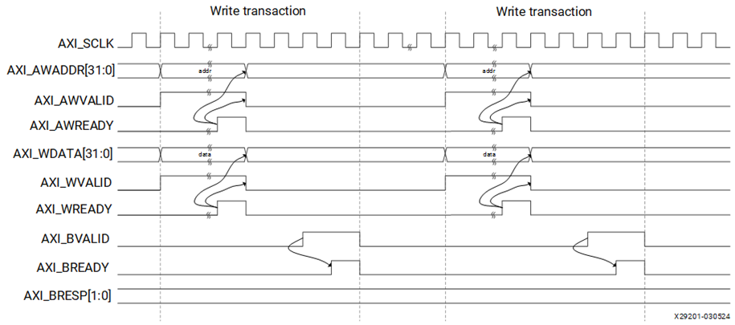
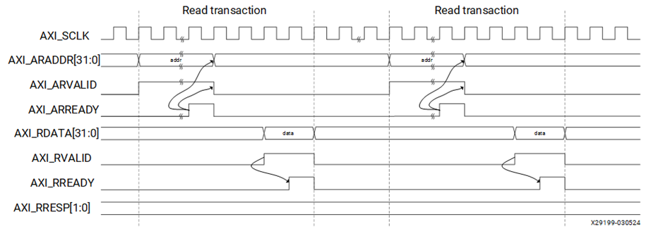
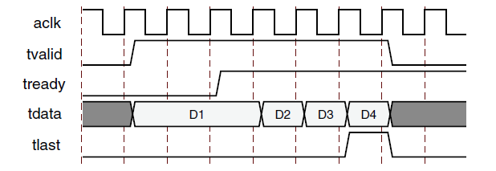

CPU 주소 공간에서 어느 주소가 메모리 또는 주변장치를 가리키는지 정의한다.
00이 장의 목표
AXI4·AXI4-Lite·AXI4-Stream의 차이와 5개 채널, VALID/READY 핸드셰이크 및 공식 전송 파형을 이해한다. Local BRAM 접근과 AXI 전송을 구별하고 06장의 실제 AXI GPIO 연결을 준비한다.
- AXI4
- AXI4-Lite
- AXI4-Stream
- VALID / READY
- AW · W · B · AR · R
- SmartConnect
AXI4주소 기반 고성능 Memory-Mapped Burst 전송.
AXI4-LitePeripheral Register 제어에 적합한 경량 Memory-Mapped 전송.
AXI4-Stream주소 없이 연속 데이터를 전달하는 Streaming 전송.
01AXI의 역할과 Memory Map의 차이
AXI(Advanced eXtensible Interface, 액시·고급 확장 인터페이스)는 CPU와 메모리·주변장치 IP가 주소, 데이터, 응답을 주고받을 때 사용하는 AMBA 계열 통신 규격이다. AXI4 계열에서는 전송 요청과 응답을 서로 구분된 채널로 전달한다.
정해진 주소와 데이터를 하드웨어 신호로 어떻게 전달하고 응답할지 정의한다.
주소의 의미: Memory Map → 전송 절차: AXI Handshake
04장에서 확인한 사실: MicroBlaze V는 ILMB(명령어용 로컬 메모리 버스)와 DLMB(데이터용 로컬 메모리 버스)를 통해 Local BRAM(로컬 블록 RAM)에 접근했다.
AXI가 연결된 주변장치에서는 CPU의 주소 접근이 AXI 전송으로 이어질 수 있지만, 모든 메모리 접근이 AXI를 거치는 것은 아니다.
02AXI4 / AXI4-Lite / AXI4-Stream 비교
세 인터페이스는 목적에 따라 선택한다. AXI4와 AXI4-Lite는 Memory-Mapped(메모리 맵드, 주소 기반) 방식이고, AXI4-Stream(액시 스트림)은 주소 채널이 없는 데이터 흐름 방식이다.
| 항목 | AXI4 | AXI4-Lite | AXI4-Stream |
|---|---|---|---|
| 주소 채널 | 있음 | 있음 | 없음 |
| 데이터 전송 | 단일 또는 Burst(버스트, 연속 묶음) 전송 | 단일 전송(Single Beat) | 연속 데이터 전송 |
| 대표 특징 | 고대역폭 메모리 접근 | 단순 제어 레지스터 접근 | 주소를 지정하지 않는 연속 처리 |
| 대표 적용 | DDR 및 메모리 컨트롤러 | GPIO, UART, Timer의 제어·상태 레지스터 | 영상, DSP, 데이터 처리 파이프라인 |
AXI4 → 메모리 데이터 전송 | AXI4-Lite → 주변장치 레지스터 제어 | AXI4-Stream → 연속 데이터 흐름
06장에서 연결할 AXI GPIO의 제어 레지스터 접근은 AXI4-Lite의 대표적인 사용 사례다. AXI4-Stream은 AXI4의 Burst 기능을 다른 이름으로 부르는 것이 아니라 별도의 주소 없는 전송 방식이다.
03Master / Slave와 SmartConnect
Master(마스터, 요청 주체)는 주소·쓰기 데이터를 내보내거나 읽기를 요청한다. Slave(슬레이브, 응답 장치)는 해당 요청을 받아 처리하고 데이터 또는 응답을 반환한다. AMD Vivado에서는 하위 IP의 연결 포트 이름에 M_AXI 및 S_AXI를 흔히 사용한다.
| 요청 쪽 | 연결 및 경로 선택 | 응답 쪽 |
|---|---|---|
| MicroBlaze V M_AXI_DP AXI Master | → SmartConnect → 주소에 맞는 Slave로 전달 ← 읽기 데이터·응답 ← | AXI GPIO S_AXI AXI Slave |
SmartConnect(스마트커넥트, AXI 연결·경로 선택 IP)는 하나 이상의 Master와 Slave를 연결하는 데 사용할 수 있으며, 설정과 접속 대상에 따라 주소 디코딩, 경로 선택, 프로토콜 변환을 담당한다. 단순한 AXI 연결의 모든 경우에 반드시 필요한 고정 구성요소는 아니다.
위 그림은 06장에서 만들 연결의 개념도이며, 05장에서 해당 회로를 이미 구현했다는 뜻이 아니다.
04Clock과 Reset
AXI의 전송 성립 여부는 ACLK(에이클록, AXI 클록)의 상승 에지(Rising Edge, 라이징 에지)에서 판정한다. READY 또는 VALID가 클록 사이에 바뀌었다고 그 순간에 데이터가 전송되는 것은 아니다.
| 신호 | 의미 | 이해할 점 |
|---|---|---|
ACLK | AXI 인터페이스 클록 | 상승 에지에서 핸드셰이크 판정 |
ARESETn | Active-Low Reset(액티브 로 리셋, 낮은 값에서 활성화) | Low 상태가 리셋을 뜻하며, IP별 실제 포트 명칭을 확인해야 한다. |
s_axi_aclk | AXI Slave IP의 클록 입력 예 | 실제 IP 포트 이름은 제품별로 다를 수 있다. |
s_axi_aresetn | AXI Slave IP의 Active-Low 리셋 입력 예 | 기존 peripheral_aresetn과 연결할 때 극성을 확인한다. |
클록·리셋 IP의 구체적인 추가·배선 절차는 06장에서 실제 Vivado 화면으로 확인한다.
05VALID / READY Handshake
Handshake(핸드셰이크, 전송 승인)는 데이터를 제공하는 쪽의 VALID(유효함)와 이를 받는 쪽의 READY(수신 가능)가 같은 상승 에지에서 모두 1일 때 성립한다. 주소·데이터·응답 채널마다 각자의 VALID/READY 쌍이 있다.
| VALID | READY | 상승 에지에서의 결과 |
|---|---|---|
| 0 | 0 | 전송 없음 |
| 0 | 1 | 전송 없음 — 수신 준비만 완료 |
| 1 | 0 | 대기 — 유효한 정보 유지 |
| 1 | 1 | 한 번의 전송 성립 |
VALID && READY → ACLK 상승 에지에서 전송 성립대기 규칙: 제공하는 쪽은 VALID를 올린 뒤 상대 READY가 0이면 VALID와 해당 주소·데이터 등 Payload(페이로드, 전달 정보)를 유지해야 한다. VALID 발생을 READY에 종속시켜 기다려서는 안 된다. READY는 먼저 1이 되어 있어도 된다.
연속 전송: VALID와 READY가 연속된 상승 에지마다 모두 1이면 각 상승 에지에서 새로운 전송이 성립할 수 있다. 따라서 두 신호가 1인 기간 전체를 한 건의 전송으로 해석하면 안 된다.
06AXI4-Lite의 독립된 5개 채널
AXI4-Lite(액시 포 라이트, 단순 주소 기반 전송 규격)는 쓰기 주소·쓰기 데이터·쓰기 응답·읽기 주소·읽기 데이터를 5개의 독립 채널로 나눈다. AXI4-Lite 규격의 데이터 폭은 32비트 또는 64비트이며, 이 과정의 MicroBlaze V M_AXI_DP에서는 32비트를 사용한다. 각 채널은 자체 VALID/READY로 전달된다.
| 채널 | 주요 신호 | 정보의 방향 | 기능 |
|---|---|---|---|
| AW (Write Address, 쓰기 주소) | AWADDR, AWVALID, AWREADY | Master → Slave | 쓸 주소를 전달 |
| W (Write Data, 쓰기 데이터) | WDATA, WSTRB, WVALID, WREADY | Master → Slave | 쓸 데이터와 바이트 유효 위치 전달 |
| B (Write Response, 쓰기 응답) | BRESP, BVALID, BREADY | Slave → Master | 쓰기 처리 결과 반환 |
| AR (Read Address, 읽기 주소) | ARADDR, ARVALID, ARREADY | Master → Slave | 읽을 주소를 전달 |
| R (Read Data, 읽기 데이터) | RDATA, RRESP, RVALID, RREADY | Slave → Master | 읽은 데이터와 처리 결과 반환 |
표의 '정보 방향'은 주소·데이터·응답의 방향을 뜻한다. 각 채널의 READY는 그 정보를 받는 쪽에서 반대 방향으로 낸다. 예를 들어 AW 채널에서는 AWVALID가 Master 출력이고 AWREADY가 Slave 출력이다.
쓰기: AW + W → B 응답 읽기: AR → R 데이터·응답
07Write Transaction과 공식 파형
Write Transaction(라이트 트랜잭션, 한 번의 쓰기 요청과 응답)에서는 Master가 쓰기 주소(AW)와 쓰기 데이터(W)를 보내고, Slave가 처리 결과(B)를 반환한다.
AW 채널 — 쓰기 주소 전달
AWVALID && AWREADY인 상승 에지에 쓰기 주소가 수락된다.W 채널 — 쓰기 데이터 전달
WVALID && WREADY인 상승 에지에 데이터와WSTRB가 수락된다.B 채널 — 처리 결과 반환
Slave가 주소와 데이터를 모두 받아 해당 쓰기 전송을 처리하면
BRESP와BVALID를 제공한다.BVALID && BREADY인 상승 에지에 응답이 전달된다.
주의: AW와 W는 서로 독립 채널이므로 주소가 먼저, 데이터가 먼저, 또는 둘이 같은 상승 에지에 수락될 수 있다. 아래 그림은 그중 한 가지 가능한 전송 파형이다. AW와 W가 반드시 정해진 순서로 도착해야 하는 것은 아니다.

AW 수락 + W 수락 → BVALID 응답 → BVALID ∧ BREADY 상승 에지
그림의 AXI_AWADDR, AXI_WDATA 등은 해당 문서의 신호 표기다. Vivado에서 실제 IP를 연결하면 M_AXI_DP_AWADDR, s_axi_awaddr처럼 접두사가 달라질 수 있다.
08Read Transaction과 공식 파형
Read Transaction(리드 트랜잭션, 한 번의 읽기 요청과 응답)은 읽기 주소(AR)와 읽기 데이터·응답(R)의 두 채널로 수행한다.
AR 채널 — 읽기 주소 수락
Master가
ARADDR와ARVALID를 제공하고,ARVALID && ARREADY인 상승 에지에 Slave가 주소를 수락한다.R 채널 — 읽기 데이터 반환
Slave가
RDATA,RRESP,RVALID를 제공하며,RVALID && RREADY인 상승 에지에 Master가 데이터를 수락한다.

Master가 RREADY를 0으로 유지하면 Slave는 완료되지 않은 R 채널 전송의 RVALID, RDATA, RRESP를 유지해야 한다. 읽기에서는 B 채널을 사용하지 않는다.
ARVALID ∧ ARREADY 상승 에지 → RVALID ∧ RREADY 상승 에지
09WSTRB와 응답 코드(BRESP / RRESP)
WSTRB(Write Strobe, 라이트 스트로브, 쓰기 바이트 유효 표시)는 쓰기 데이터 중 실제로 유효한 Byte Lane(바이트 레인)을 표시한다. MicroBlaze V의 32비트 데이터 인터페이스에서는 4비트 스트로브가 바이트 4개에 대응한다.
| WSTRB[3:0] | 유효한 바이트 레인 | 32비트 WDATA 예: 0xAABBCCDD |
|---|---|---|
0001 | Byte 0 | DD 바이트만 유효 |
0011 | Byte 0, 1 | CCDD의 두 바이트가 유효 |
1111 | Byte 0~3 | 네 바이트 모두 유효 |
이는 교육용 32비트 예시다. 각 Slave의 레지스터가 실제로 어떤 바이트 쓰기를 허용하는지는 그 IP 문서를 확인해야 한다.
| 응답 코드 | 2비트 | 의미 및 AXI4-Lite 적용 |
|---|---|---|
OKAY | 00 | 정상 완료 |
EXOKAY | 01 | 배타적 접근 응답. AXI4-Lite에서는 지원하지 않음. |
SLVERR | 10 | Slave 처리 오류 |
DECERR | 11 | 주소 디코딩 오류 |
BRESP는 쓰기 응답, RRESP는 읽기 응답에 사용한다. 개별 IP가 SLVERR나 DECERR를 직접 생성하는지는 구현에 따라 다르다. EXOKAY를 AXI4-Lite의 정상 응답으로 해석해서는 안 된다.
10AXI4 Burst와 AXI4-Lite의 경계
Burst(버스트, 한 번의 주소 요청으로 여러 데이터 전송을 묶는 방식)는 AXI4의 대표 기능이다. AXI4는 하나의 주소 요청에 여러 Data Beat(한 번의 데이터 전송 단위, 0 또는 1을 뜻하는 bit와 구별)를 사용할 수 있고, AXI4-Lite는 한 번의 주소 접근당 한 번의 데이터 전송만 지원한다. AXI4-Lite에는 AWLEN/ARLEN(버스트 길이 지정) 신호가 없다.
AW 또는 AR 주소 요청 → 데이터 Beat 0 → Beat 1 → … → 마지막 Beat
주소 요청 → 데이터 한 번 → 응답. 한 번의 주소 요청에 전송 데이터는 한 Beat이다.
AXI4-Lite는 단순한 레지스터 제어에 적합하다. GPIO 제어 레지스터 하나를 쓰는 작업에 다중 Beat 전송이나 복잡한 트랜잭션 ID를 요구하지 않는다.
일부 AXI 연결·변환 IP는 AXI4의 Burst 접근을 AXI4-Lite에 맞는 여러 단일 접근으로 변환할 수 있다. 이는 변환 IP의 기능이지 AXI4-Lite 자체가 Burst를 지원한다는 의미가 아니다.
11AXI4-Stream 구조와 공식 파형
AXI4-Stream(액시 포 스트림, 주소 없는 스트리밍 인터페이스)은 Source(소스, 데이터 제공 장치)에서 Destination(데스티네이션, 수신 장치)으로 연속 데이터를 넘길 때 사용한다. AW·AR 같은 주소 채널이 없으며, 데이터 흐름에 TVALID와 TREADY를 사용한다.
| 신호 | 역할 |
|---|---|
TDATA | 전달할 데이터 |
TVALID | Source가 유효한 전송 단위를 제공함 |
TREADY | Destination이 데이터를 받을 준비가 됨 |
TLAST | 패킷 또는 응용별 전송 경계의 마지막 Beat 표시(선택 신호) |
TKEEP, TUSER | 유효 바이트 표시·사용자 정의 부가 정보(구성에 따른 선택 신호) |

TVALID와 TREADY가 같은 상승 에지에 1인 곳에서 D1, D2, D3, D4가 차례로 전달된다.AMD PG256 · AXI4-Stream Interface수신 측이 TREADY를 0으로 내리면 Backpressure(백프레셔, 수신 측의 전송 지연)가 발생한다. 이때 전송이 아직 완료되지 않은 Source는 TVALID와 데이터 및 관련 부가 신호를 유지한다. TLAST는 '마지막 바이트'가 아니라 마지막 전송 Beat를 나타낸다.
12MicroBlaze V의 AXI 포트와 장별 연결
AMD UG1629 2024.2 기준, MicroBlaze V의 M_AXI_DP(Master AXI Data Peripheral, 주변장치 데이터용 마스터)는 데이터 폭이 32비트인 Memory-Mapped 인터페이스다. 기본 설정은 AXI4-Lite이며, lr/sc 명령을 위한 Exclusive Access(익스클루시브 액세스, 배타적 메모리 접근)를 활성화하는 설정에서는 AXI4를 사용한다. 현재 프로젝트에서 Exclusive Access 설정을 별도 것은 아니다.
| 구분 | 실제 연결·예정 상태 | 확인 경계 |
|---|---|---|
04장 ILMB / DLMB | Local BRAM, 0x00000000 ~ 0x00003FFF (16 KiB) | 실제 읽기·쓰기 확인 |
04장 M_AXI_DP | 아직 AXI 주변장치에 연결되지 않음 | AXI MMIO 동작은 미확인 |
| 06장 예정 경로 | M_AXI_DP → AXI 연결 IP → AXI GPIO S_AXI | 실제 Block Design·주소·프로그램으로 확인 예정 |
04장: CPU → Local BRAM
05장: AXI 신호·채널·파형 이해 (이론)
06장: CPU → AXI GPIO → Basys3 Switch / LED (실습)
05장: AXI 신호·채널·파형 이해 (이론)
06장: CPU → AXI GPIO → Basys3 Switch / LED (실습)
CPU의 C 코드에서 주변장치 주소를 읽고 쓰더라도, 하드웨어 접근 경로는 연결된 메모리·버스 구성에 따라 달라진다. 06장에서 Vivado의 AXI GPIO 연결과 Address Editor(어드레스 에디터, 주소 할당 화면), Vitis 프로그램 실행으로 실제 주변장치 경로를 확인한다. Switch 입력과 LED 출력의 정상 동작은 주변장치 기능 확인
13SoC 05 핵심 정리
| 구분 | 핵심 |
|---|---|
| AXI4 | 주소 기반, Burst 전송 지원 |
| AXI4-Lite | 주소 기반, 단일 전송, AW/W/B/AR/R 5개 채널 |
| AXI4-Stream | 주소 채널이 없는 스트리밍 전송 |
| Handshake | 각 채널의 VALID와 READY가 같은 클록 상승 에지에 모두 1일 때 전송 성립 |
| Write / Read | Write: AW와 W는 독립 → B 응답 / Read: AR → R 데이터·응답 |
| 실제 프로젝트 | 04장 Local BRAM 접근 확인, AXI GPIO 동작은 06장에서 확인 |
SoC 05 · AXI 통신 구조 이해 → SoC 06 · Vivado AXI GPIO 연결 및 Basys3 실습
14참고 문서 · 파형
MicroBlaze V에 관한 설정 설명은 사용하는 Vivado 2024.2 버전의 AMD 공식 문서를 우선한다. PG203 및 PG256의 파형은 각 IP 문서에 제시된 공식 설명용 예시
| 공식 자료 | 관련 내용 |
|---|---|
| AMD UG1629 · Peripheral Interfaces · 2024.2 | MicroBlaze V M_AXI_DP 기본 AXI4-Lite와 데이터 주변장치 접근 |
| AMD UG1629 · Interface Parameters and Signals · 2024.2 | C_M_AXI_DP_PROTOCOL 및 Exclusive Access 설정 |
| AMD UG1629 · MicroBlaze V I/O Overview | ILMB·DLMB 및 AXI 포트 구분 |
| AMD UG994 · When to Use SmartConnect IP · 2024.2 | AXI4-Lite 연결에 SmartConnect 사용 |
| AMD PG203 · AXI4-Lite Write/Read Transactions | 공식 쓰기·읽기 타이밍 파형 |
| AMD PG256 · AXI4-Stream Interface | TVALID / TREADY / TDATA 핸드셰이크 |
| AMD PG101 · AXI Protocol Checks | AXI4-Lite의 EXOKAY 응답 금지 규칙 |